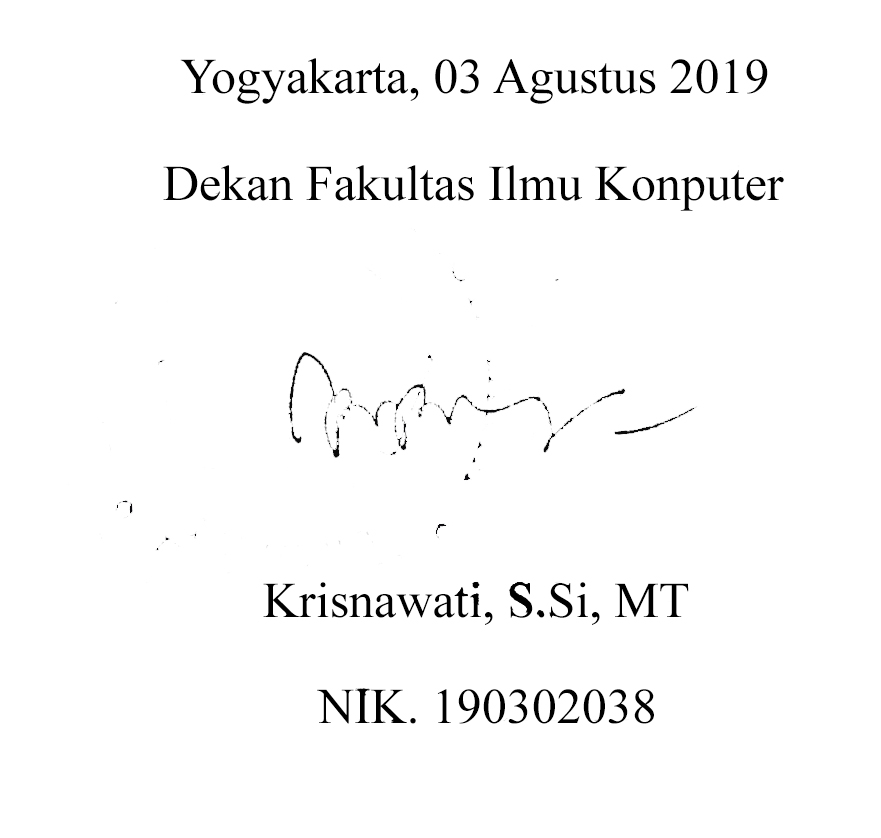

<?php 
    function callview($data){
        include "phpqrcode/qrlib.php";
        $isi_teks = "Belajar QR Code itu asik";
$namafile = "coba.png";
$quality = 'H'; //ada 4 pilihan, L (Low), M(Medium), Q(Good), H(High)
$ukuran = 5; //batasan 1 paling kecil, 10 paling besar
$padding = 0;
 
QRCode::png($isi_teks,$namafile,$quality,$ukuran,$padding);
 
 
?>

<style>
    .main {
        /* width: 100%; */
        /* background-color: red; */
        height: 100%;
    }
    
    table {
        font-family: arial;
        margin-top: 12px;
        margin-left: -45px;
    }
    
    .header {
        background-color: rgb(101, 0, 100);
        text-align: center;
        /* padding: 10px;
         */
        height: 60px;
        font-size: 18px;
        color: white;
        display: flex;
        align-items: center;
        line-height: 60px;
        /* margin-bottom: 20px; */
        font-weight: normal;
        /* font-family: arial; */
        /* margin-left: 40px; */
        width: 800px;
    }
    
    #nomor {
        font-size: 120%;
        margin-top: 10px;
    }
    
    #nama {
        margin-top: 30px;
        padding-bottom: 10px;
    }
    
    .hr {
        width: 200px;
        border-bottom: 2.5px solid black;
        margin: auto;
    }
    
    #nama,
    #nim {
        font-family: lucid;
        font-size: 120%;
    }
    
    #nim {
        margin-top: 15px;
        font-size: 150%;
    }
    /* td {
        border: 1px solid black;
    } */
    
    .footer {
        margin-top: 80px;
        margin-left: 280px;
    }
    
    .main {
        width: 700px;
    }
</style>
<page>
    <div class="main">
        <div class="header">
            <p style="margin-top: 20px;margin-left: -28px;font-family: Arial, Helvetica, sans-serif;">
                A&nbsp;&nbsp;M&nbsp;&nbsp;I&nbsp;&nbsp;K&nbsp;&nbsp;O&nbsp;&nbsp;M &nbsp;&nbsp;&nbsp;&nbsp;&nbsp;&nbsp;C&nbsp;&nbsp;R&nbsp;&nbsp;E&nbsp;&nbsp;A&nbsp;&nbsp;T&nbsp;&nbsp;I&nbsp;&nbsp;V&nbsp;&nbsp;E &nbsp;&nbsp;&nbsp;&nbsp;&nbsp;&nbsp;E&nbsp;&nbsp;C&nbsp;&nbsp;O&nbsp;&nbsp;N&nbsp;&nbsp;O&nbsp;&nbsp;M&nbsp;&nbsp;Y
                &nbsp;&nbsp;&nbsp;&nbsp;&nbsp;&nbsp;P&nbsp;&nbsp;A&nbsp;&nbsp;R&nbsp;&nbsp;K
            </p>
        </div>
        <table style="width: 800px;">
            <tr>
                <td style="width: 25%;"></td>
                <td style="width: 50%;">
                    
                </td>
                <td style="width: 25%; font-size: 150%;font-family: times;">
                    <br /> NO.
                    <?php echo $data['no'];?>
                </td>
            </tr>
            <tr>
                <td></td>
                <td id="nomor" style="text-align: center;">
                    <br /><br />
                    <br />NOMOR:&nbsp;
                    <?php echo $data[ 'fa'];?>
                    <br /> Menyampaikan penghargaan kepada :
                </td>
                <td></td>
            </tr>

            <tr>
                <td colspan="3" id="nama" style="text-align: center;">
                    <h3 id="nama">
                        <?php echo strtoupper($data['nama']);?>
                    </h3>
                </td>
            </tr>
            <tr>
                <td></td>
                <td>
                    <div class="hr"></div>
                </td>
                <td></td>
            </tr>
            <tr>
                <td></td>
                <td style="text-align: center;padding-top: -15px;">
                    <h3 id="nim">
                        <?php echo $data['nim'];?>
                    </h3>
                </td>
                <td></td>
            </tr>

            <tr>
                <td></td>
                <td style="text-align: center;font-size: 120%;">
                    <br />
                    <br /> Atas peran sertanya sebagai:
                </td>
                <td></td>
            </tr>
            <tr>
                <td colspan="3" style="font-weight:bold;text-align: center;font-size: 120%;line-height: 80%;">
                    <br /> ASISTEN PRAKTIKUM MATA KULIAH

                    <?php echo strtoupper($data['mk']);?>
                    <br /><br /> PROGRAM STUDI
                    <?php echo strtoupper($data['prodi']);?>
                    <br /><br /> PADA SEMESTER
                    <?php echo strtoupper($data['semester']);?> TA.
                    <?php echo $data['ta'];?>
                    <br /><br /> DENGAN PREDIKAT "
                    <?php echo strtoupper($data['predikat']);?>"
                </td>
            </tr>
            <tr>
                <td>
                    
                </td>
                <td style="text-align: right;">
                    <h4 style="font-family: times;margin-top:80px;">
                        Yogyakarta, 03 Agustus 2019
                        <br />
                        <br />&nbsp;&nbsp;&nbsp;&nbsp; Dekan Fakultas Ilmu Komputer
                        <br />
                        <br />
                        <br />
                        <br />
                        <br />
                        <br /> &nbsp;&nbsp;&nbsp;&nbsp;Krisnawati, S.Si, MT
                        <br /><br />&nbsp;&nbsp;&nbsp;&nbsp;NIK 190302038
                    </h4>
                </td>
                <td></td>
            </tr>
        </table>

        <!-- <div class="footer">
            px;margin-left: 0px;" />
        </div>
        <div class="end">
            
        </div> -->
    </div>
</page>
<?php } ?>